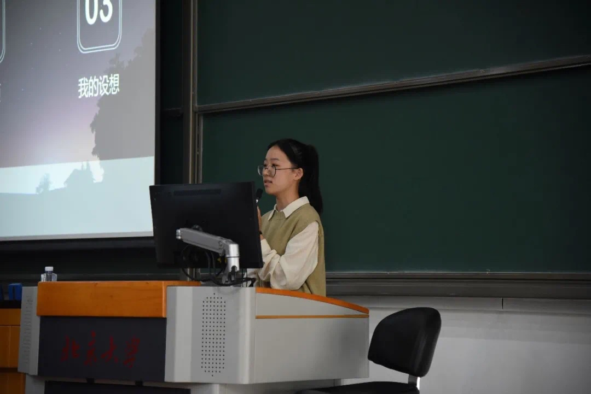

我叫叶子，来自浙江，是一名预防医学21级本科新生，喜欢轮滑钢琴运动吃东西！！
《大侦探皮卡丘》是一次灵动而又极具魅力的电影改编，伴随着令人无法抗拒的世界观构建。本片会让观众对宝可梦的热爱更加深厚。电影本质上讲述的关于父子亲情的故事，是很容易引发共情的。一般来说，宝可梦对人类来说就像是宠物，电影也通过一种很动人的方式，探索人类如何对待我们的宠物。这部电影仍然足以满足宝可梦的粉丝，以及对宝可梦并不算熟悉的观众。事实证明，《大侦探皮卡丘》并不算差。影片拥有迷幻意味的设定和制作，也展现了它应有的娱乐性和魅力。